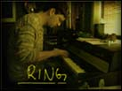
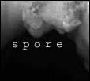
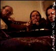
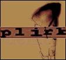
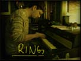
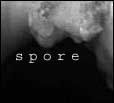
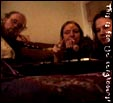
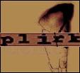

3 nye spor i real + mp3
http://go.to/ring/

16kbps realaudio
http://mp3.com/spore/


Plirk: En time lyd/video og tre musikkmaskiner
i java og flash.
|
 3 nye spor i real + mp3 http://go.to/ring/ |
 16kbps realaudio http://mp3.com/spore/ |
 |
 Plirk: En time lyd/video og tre musikkmaskiner
i java og flash.
|